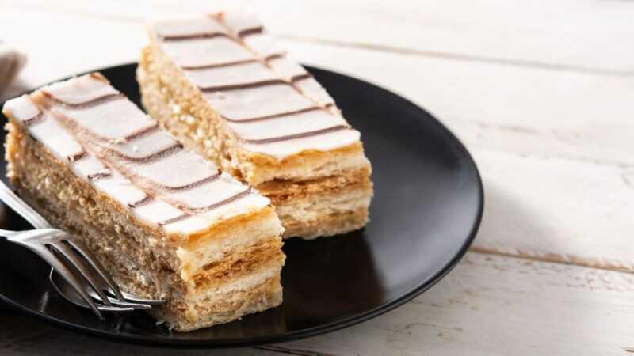

Milhojas

Ingredientes
- 1 lámina de masa hojaldrada
- 2 tazas de crema pastelera
- Azúcar glasé
Preparacion
- Precalentar el horno a 200°C y preparar una bandeja de horno forrada con papel de hornear. Asegurarse que la masa hojaldrada esté fría y en condiciones para empezar. Extenderla sobre una superficie ligeramente enharinada y usar un rodillo para estirarla ligeramente y darle forma rectangular.
- Transferir a la bandeja preparada y picar la superficie con un tenedor para evitar que se infle demasiado. Hornear 15-20 minutos o hasta que esté dorada y bien inflada. Es importante vigilar durante el proceso de horneado para que no se queme.
- Retirar del horno y cuando la masa esté fría, cortar cuidadosamente las capas en rectángulos o cuadrados. Colocar una capa de masa hojaldrada en un plato y agregar una capa generosa de crema pastelera sobre ella. Repetir el proceso hasta usar todas las capas.
- Finalizar la preparación con una capa hojaldrada. Espolvorear azúcar glasé y refrigerar durante al menos 1 hora antes de servir, para que la crema pastelera se asiente y sea más fácil de cortar.